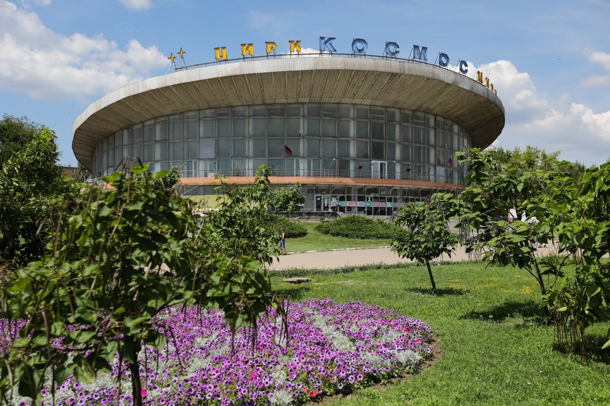
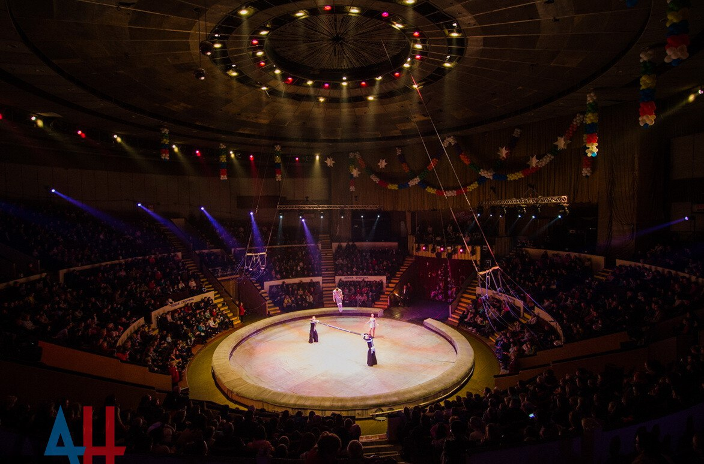

Донецкий государственный цирк "Космос"
Государственное предприятие «Донецкий цирк «Космос», является носителем традиций циркового искусства в Донецкой Народной Республике. Первый в Донецке стационарный цирк был открыт 7 января 1926 года. Это здание было деревянным. Инициатором строительства и первым директором цирка стал Федор Дмитриевич Яшинов. Артистическая труппа выбрала название “Коларт” (коллектив артистов). Здание сохранилось до 1933 года, а затем сгорело.
В последующие годы в городе работали многочисленные передвижные цирки– шапито. Современный цирк был открыт 26 августа 1969 года, в канун юбилейных торжеств, посвященных 100–летию г. Донецка. При строительстве было решено отказаться от традиционных форм цирка с куполом и создать уникальное сооружение в виде усечённого цилиндра диаметром 60 метров и высотой 30 метров. На арене Донецкого цирка не раз выступали представители прославленных артистических династий Дуровых, Филатовых, Запашных, Ольховиковых, Волжанских, Кио, Александровых-Серж, Кантемировых, Бегбуди, Ташкенбаевых, Ходжаевых и т.д. Здесь работали корифеи циркового манежа – Юрий Никулин, Олег Попов, Михаил Румянцев, Ирина Бугримова, Маргарита Назарова, Людмила и Владимир Шевченко, Людмила Котова и Юрий Ермолаев, Валерий Денисов, Александр Корнилов, Степан Исаакян, Виктор Тихонов, Тамерлан Нугзаров, Владимир Довейко, Марина Маяцкая, Нелли Касеева и многие другие.